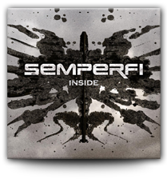

- DISCOGRAPHY |
- VIDEOS |
- PHOTOS |
- DOWNLOADS

-

AVAILABLE FROM
-
INSIDE
2012
-
InsideInside
ThirteenThirteen
Sick Of YouSick Of You
This Ain't OverThis Ain't Over [Download]
DeeplessDeepless
Of Two MindsOf Two Minds
Control MyselfControl Myself
FearFear
Darkened Heartless EyesDarkened Heartless Eyes
VoicesVoices
Full-length 10-track album written and recorded over the period of early 2011 to early 2012.
Mixed and produced by Dan Goldsworthy (My Minds Weapon/Artwork Designer for 'HELL' featuring Andy Sneap).
Drums recorded by Gavin Allan at Salford University in Manchester, UK.
Guitars and Bass recorded and edited by Liam Watt, Gary Addison and James Gibb at RSC Studios in Aberdeen, UK.
Vocals recorded at Rattlehead Studio in Kemnay, UK. All music and artwork by Semperfi.
-
AVAILABLE FROM
-
SICK OF YOU
2011
-
- Sick Of You
- Control Myself
- The Abyss (Acoustic)
- Picture Me Ablaze (iTunes Bonus)
3-track single and music video released in April 2011, to promote forthcoming album 'Inside'.
Mixed and produced by Dan Goldsworthy (except 'The Abyss Acoustic' - produced by Michael Macdonald).
All recording done same as above 'Inside' album.
All music and artwork by Semperfi.
Music video filmed and produced by Jamie Bathgate.
-
DOWNLOAD FOR
FREE
FROM
-
THE ABYSS
2009
-
- Picture Me Ablaze
- The Abyss
- Dying Nations
3-track EP released in September 2009.
Mixed and produced by 'MackieBros Productions' in Aberdeenshire, UK.
All music recorded at MackieBros Productions studio.
All music and artwork by Semperfi.
'The Abyss' EP is available for FREE streaming/download at: semperfi.bandcamp.com
- DISCOGRAPHY |
- VIDEOS |
- PHOTOS |
- DOWNLOADS